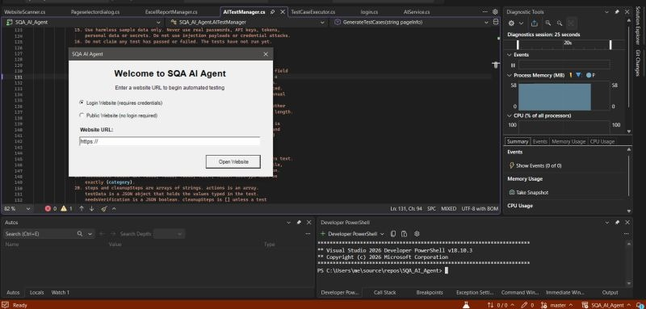

Testing
Functional TestingRegressionSmoke & SanityExploratoryUAT SupportCross-Browser
Hello, I'm
I'm Syed Usman Hussain, an SQA Engineer focused on manual and automation testing. I read requirements closely, design test cases that catch real problems, and automate repeatable checks with Selenium (C#) so releases stay fast and reliable.
My goal is simple: find defects early, report them clearly, and help the team ship software people can trust.
SRP Technologies
Apr 2025 – Apr 2026Karachi, Pakistan
AI-powered knowledge management platform with web, mobile and facial-recognition kiosk modules. Led end-to-end manual testing across 400+ test cases, reported 200+ bugs, did API testing with Postman and built automated regression scripts with Selenium (C#) on .NET.
MIDSONLINE
Dec 2022 – Apr 2025Karachi, Pakistan
BS Software Engineering
Muhammad Ali Jinnah University, Karachi
Aug 2017 – Feb 2022
Recognized for Dedication and Hard Work
MIDSONLINE
November 2024
An agent that scans a website and generates test cases with AI. Built in C# with Selenium and MSTest.
The lesson so far: the AI is only as good as what it can see. If the page information is incomplete, the generated test cases are incomplete, and no prompt can fix that. So I'm reworking the discovery part:

Selenium + C# framework using Page Object Model for stable, reusable UI tests with clear reporting.
Complete test plan, test cases and regression pack covering critical user flows and edge cases.
Postman collections validating status codes, payloads and error handling across key endpoints.
Looking for a detail-driven QA engineer? Send me a message.